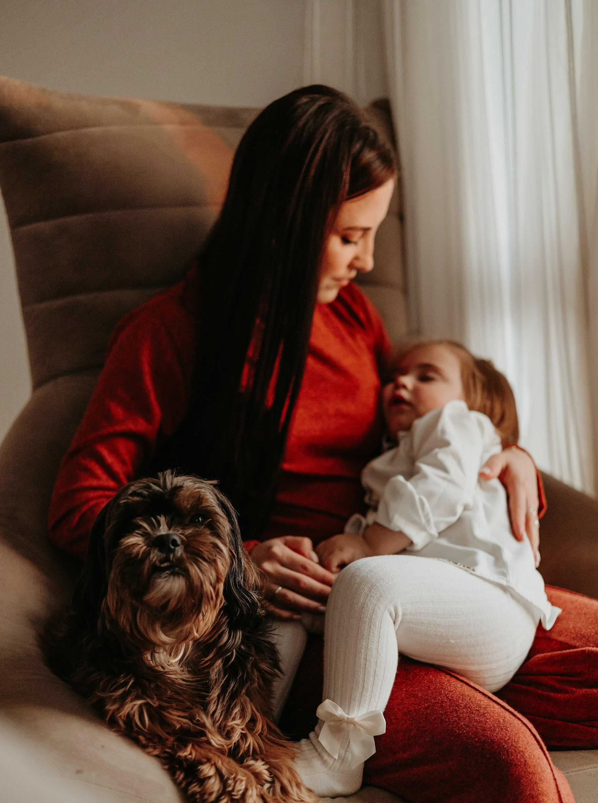
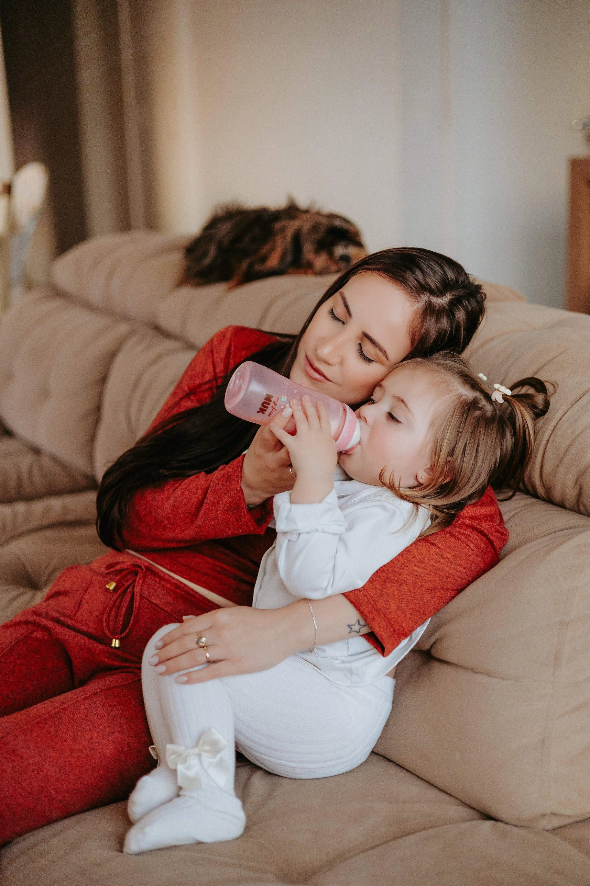
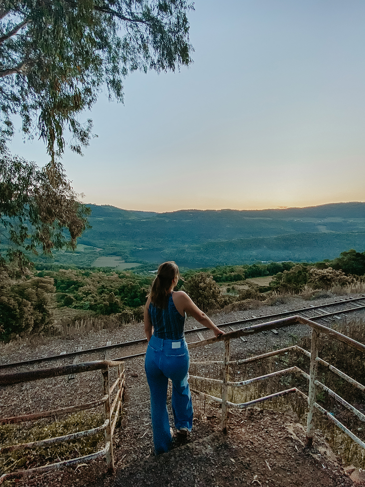
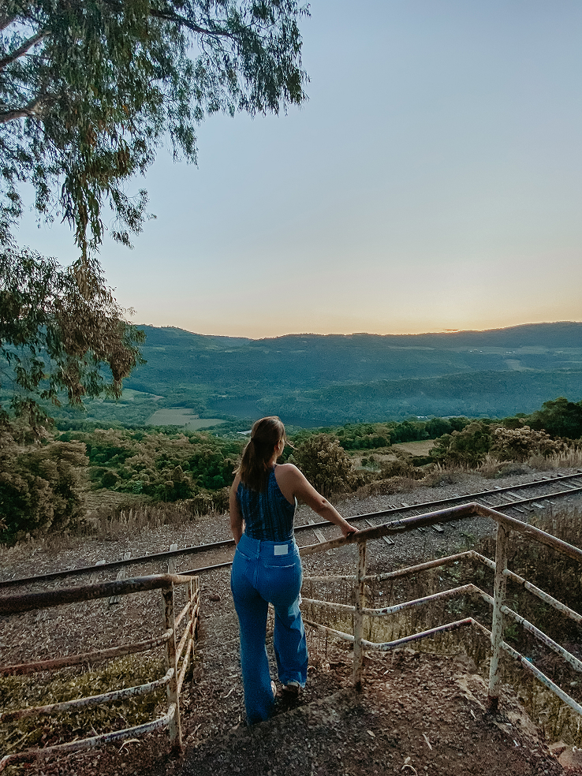

Deixa eu te contar
uma história.
Ana era mulher batalhadora, além de ótima profissional tinha uma filha. No verão após sua empresa ter problemas, decidiu sair de férias com a família para esfriar a cabeça. Ao perceber que sua bebê estava muito feliz, Ana pegou o seu celular para tirar fotos, logo ficou frustrada pois notou que não conseguia capturar de forma correta. Foi aí que ela teve uma VIRADA DE CHAVE. O problema da sua empresa de maquiagens era que ela não capturava o que os seus olhos realmente viam.


 
